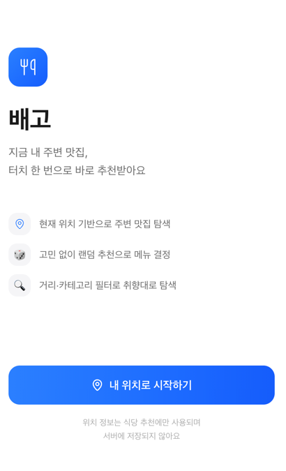
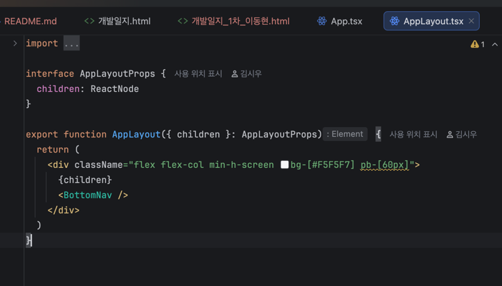

개발일지(1차)
|
개발기간 |
2026년 3월 6일 – 3월 19일 |
||
|
학 번 |
3114 |
성 명 |
조성현 |
|
프로젝트 주제 |
배고 — 위치 기반 식사 추천 서비스 (Web-view App) |
||
|
기능 구현 및 진행상황 |
* 이번 주 목표 및 진행률
- 스토리보드(전체 화면 흐름) 작성 — 100% 완료 - UI/UX 관점 요구사항 명세서 작성 — 100% 완료 - Figma 화면 설계 초안 (스플래시·홈·추천·필터 화면) — 80% 완료 (즐겨찾기·마이페이지 화면 마무리 중) - 디자인 시스템 초안 (컬러 팔레트, 타이포그래피, 간격 규칙) — 100% 완료
* 주요 개발 내용
1. 스토리보드 작성 - 앱 전체 화면 흐름 설계: 스플래시 → 위치 권한 요청 → 홈(추천) → 상세/딥링크 → 즐겨찾기 → 마이페이지 - 각 화면의 진입 조건, 전환 트리거, 예외 흐름(권한 거부·위치 오류) 명시 - 팀 전체 리뷰 후 화면 구조 최종 확정
2. UI/UX 요구사항 명세서 작성 (ver 1.2) - 스플래시·위치 권한·홈화면·필터·즐겨찾기·마이페이지 6개 영역 요구사항 정의 - 각 요구사항에 ID(FR-U-xx), 우선순위(필수/권장/선택), 상태(TODO/IN PROGRESS/DONE) 부여 - 위치 권한 거부 시 수동 지역 입력 fallback UI, 권한 사전 안내 화면 필수 요건으로 명시
3. Figma 화면 설계 초안 - 스플래시 화면: 로고 페이드인 애니메이션 설계 (0.5초 이상 노출) - 홈(추천) 화면: 상단 위치 헤더, 추천 카드(대표 1장), 하단 목록, 카테고리 필터 탭 레이아웃 설계 - 필터 바텀 시트: 거리(500m/1km/2km), 카테고리(전체/한/중/일/양), 정렬(거리순/평점순) 선택 UI - 하단 네비게이션: 홈·탐색·즐겨찾기·마이페이지 4개 탭
4. 디자인 시스템 초안 수립 - 컬러 팔레트: 주색(#FF6B35 오렌지 계열), 배경(#FFFFFF), 텍스트(#222222 / #888888) - 타이포그래피: 제목 18px Bold / 본문 14px Regular / 캡션 12px Regular - 간격 규칙: 8px 단위 그리드, 카드 radius 12px, 버튼 radius 8px - Tailwind CSS 커스텀 설정값으로 팀 내 공유 예정
※ 첨부: 스토리보드 HTML 문서, 요구사항명세서 HTML 문서, Figma 화면 설계 스크린샷, 디자인 시스템 정의 시트
 [그림 1] 배고 앱 온보딩 화면 — 위치 기반 맛집 추천 서비스 진입 UI 구현 결과
 [그림 2] AppLayout 컴포넌트 소스코드 — 전체 화면 공통 레이아웃 구조 구현 |
||
|
이슈 관리 및 해결 과정 |
* 발생한 이슈 (Issue): - Figma에서 컴포넌트를 화면별로 개별 제작하다 보니 버튼·카드 등 공통 요소가 각 프레임마다 중복 정의되어 수정 시 일관성이 깨지는 문제가 발생함. (예: 버튼 색상 수정 시 3개 프레임을 각각 수동 변경해야 하는 상황)
* 원인 분석: - 초기 화면 설계 시 Figma 컴포넌트(Component) 기능을 활용하지 않고 일반 그룹(Group)으로만 작업한 것이 원인. 재사용 가능한 Master Component를 먼저 정의하지 않은 채 화면 구성에 집중하였음.
* 해결 과정 및 결과 (Resolution): - Atomic Design 방식 적용: Button, Badge, Card, BottomSheet 등 공통 요소를 Figma Master Component로 먼저 분리 정의 후, 각 화면 프레임에서 Instance로 참조하는 구조로 재설계 - Figma 공식 문서 및 생성형 AI(Claude) 활용: Atomic Design 컴포넌트 분류 기준 및 Figma Auto Layout 적용 방법 참조 - 결과: 컴포넌트 구조 재정리 완료. 이후 색상·크기 변경 시 Master Component 1회 수정으로 모든 화면 일괄 반영 가능한 구조 확보
|
||
|
KPT 회고 및 차주 계획
|
* Keep (유지할 점): - 스토리보드 작성 후 팀 전체 리뷰를 통해 화면 구조를 합의한 것이 효과적이었음. FE 기능 담당(김시우)이 개발 방향을 명확히 파악하고 타입 정의를 먼저 시작할 수 있었음. - 디자인 시스템을 코드 작성 전에 미리 정의하여 Tailwind 커스텀 설정과 연동 가능한 구조로 준비한 점.
* Problem (문제점/아쉬운 점): - Figma 컴포넌트 구조를 초반에 잘못 잡아 재작업이 발생하면서 즐겨찾기·마이페이지 화면 설계가 2주차로 이월됨. - 요구사항 명세서에서 일부 엣지 케이스(GPS 권한 재요청 흐름, 네트워크 오류 UI)가 1차에서 누락되어 추가 작성이 필요함.
* Try (시도할 점/개선 방향): - 다음 화면 설계부터는 Master Component를 먼저 정의한 뒤 화면 구성에 착수하는 순서로 진행. - 요구사항 명세서 누락 항목(네트워크 오류 UI, GPS 재요청 시나리오)을 3주차 내 보완 작성.
* 차주(3~4주차) 개발 계획: - Figma 화면 설계 완성 (즐겨찾기·마이페이지 화면 추가) - 공통 컴포넌트 개발 시작: Button, Badge, BottomSheet, LoadingSpinner, BottomNav, AppLayout - Tailwind CSS 커스텀 설정(tailwind.config) 적용 및 팀 공유 - LocationHeader, CategoryFilter 컴포넌트 구현 착수 |
||